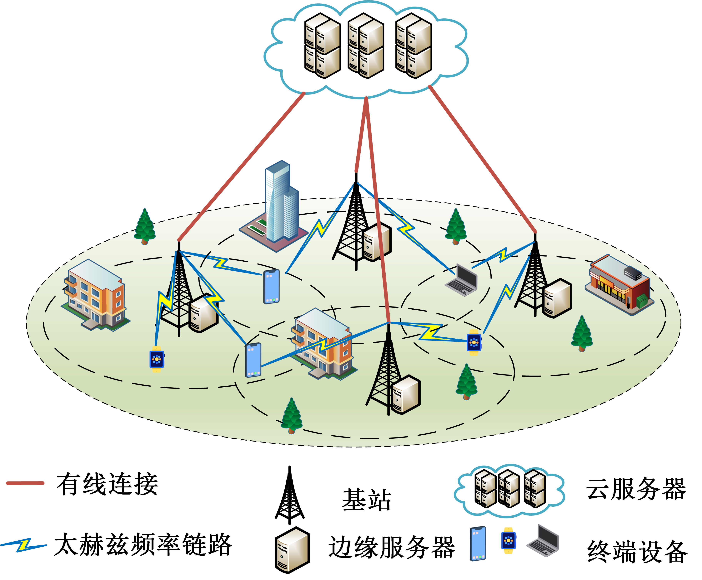

About Me

[cite_start]我是 邢华 (Hua Xing)。我于 2023 年 7 月毕业于 北京信息科技大学 [cite: 5, 45, 46, 47]，获得计算机技术硕士学位。 [cite_start]目前就职于 中邮证券有限责任公司 信息技术部 [cite: 8, 54]。
[cite_start]我的硕士期间的研究方向主要集中在移动边缘计算 (MEC) 和物联网 (IoT) [cite: 28, 31, 34]， [cite_start]具体包括资源分配策略 [cite: 28, 29, 70, 71][cite_start]、绿色低碳的请求调度与能源管理 [cite: 31, 32, 73, 74][cite_start]，以及边缘协同计算优化技术 [cite: 34, 35, 76]。
🔔 News
-
[cite_start]
- [2023/07] 获得 北京市优秀毕业生 荣誉 [cite: 5, 49]。 [cite_start]
- [2023/07] 入职中邮证券有限责任公司信息技术部 [cite: 8, 54]。 [cite_start]
- [2023] 我们的论文 "Data scheduling and resource allocation..." 发表在 Wireless Networks [cite: 21, 64]。 [cite_start]
- [2023] 我们的论文 "Game Theory Based Task Offloading..." 被 WCNC 2023 接收 (CCF C) [cite: 23, 66]。 [cite_start]
- [2022] 获得 国家奖学金 (National Scholarship) [cite: 5, 49]。 [cite_start]
- [2022] 我们的论文 "Game-Based Channel Selection..." 发表在 Security and Communication Networks (CCF C) [cite: 11, 57]。 [cite_start]
- [2022] 我们的论文 "Cost-Efficient Edge Caching..." 发表在 China Communications (科技卓越期刊) [cite: 18, 58]。 [cite_start]
- [2021] 申请专利 "信道选择的方法、装置、电子设备及存储介质" (进入审查阶段) [cite: 24, 67]。
Publications
(*: first author, †: first student author - 请根据实际情况修改)

🏅 Honors
-
[cite_start]
- 北京市优秀毕业生 (2023) [cite: 5, 49] [cite_start]
- 国家奖学金 (2022) [cite: 5, 49] [cite_start]
- 学业二等奖学金 (2021, 2022, 2023) [cite: 5, 49] [cite_start]
- 国家励志奖学金 (2015-2016, 2016-2017) [cite: 5, 52] [cite_start]
- 专业一等奖学金 (2017-2018) [cite: 5, 52] [cite_start]
- 校级三好学生 (2015-2016, 2016-2017, 2017-2018) [cite: 6, 52]